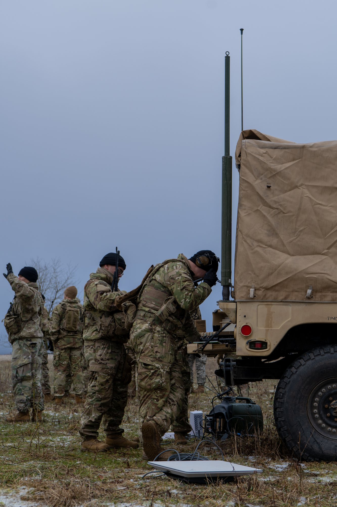

Il collegamento era tornato pieno il 24 ottobre, dopo undici giorni di limitazioni. Tre settimane dopo il problema si ripresenta, in una forma più circoscritta e politicamente più delicata. Da giovedì 12 novembre Kiev denuncia che i terminali Starshield, la versione militare di Starlink, usati lungo il fronte e sopra le zone controllate dalla Russia perdono il segnale quando il drone a cui sono montati supera i 161 km/h, cioè 100 miglia orarie. Volodymyr Zelensky dice che non si tratta di guasti casuali. SpaceX risponde che non c'è stato alcun cambiamento.
Che cosa sta succedendo
L'allarme arriva giovedì 12 novembre. Zelensky annuncia che i reparti hanno rilevato restrizioni su Starshield lungo tutta la linea del fronte e nei territori temporaneamente occupati: i collegamenti dei velivoli che superano i 161 km/h si interrompono. Lo Stato maggiore aggiunge che i malfunzionamenti riducono la capacità della difesa aerea di contrastare i droni a reazione russi e che i reparti stanno adattando il sistema alla nuova situazione. In un video pubblicato lo stesso giorno il presidente spiega il punto in una frase: «Senza la velocità che ci serve, abbattere questi Shahed diventa molto più difficile, e questo significa che più attacchi russi vanno a segno e che muore più gente».
La differenza rispetto a ottobre sta nella geografia. Il ministero della Difesa di Kiev indica che il tetto vale sopra le zone occupate e lungo il fronte, non sul territorio controllato dal governo. Venerdì 13 Zelensky lo dice ai giornalisti con parole che spostano la questione dal piano tecnico a quello politico: «Se imponi restrizioni lì, stai già riconoscendo in parte i territori temporaneamente occupati come non nostri». E aggiunge che l'Ucraina ha il diritto di chiedere che il servizio torni senza alcun limite.
Il danno pratico riguarda soprattutto gli intercettori. Gli Shahed a reazione volano ben oltre i 161 km/h, e un drone che deve inseguirli non può essere più lento del bersaglio. Denys Sienik, il diplomatico che guida l'ambasciata ucraina a Washington, ha spiegato che le unità Bars, che usano Starshield proprio per abbattere questi droni, non riescono più a farlo vicino al fronte. «Ad oggi posso confermare che le restrizioni sono in vigore. Non sono casi isolati, sono diffuse», ha detto venerdì 14. Gli Shahed vanno quindi fermati più indietro, sopra il territorio ucraino, e questo dà ai russi più occasioni per colpire.
La versione di SpaceX
SpaceX ha risposto due volte, con lo stesso messaggio. Alla stampa americana un suo rappresentante ha detto giovedì: «È falso. Non c'è stato alcun cambiamento». Al ministero della Difesa ucraino, che l'ha contattata in via ufficiale, l'azienda ha scritto che non sta imponendo restrizioni e ha attribuito i problemi a cause tecniche. Non ha risposto, riferiscono funzionari ucraini, alla domanda successiva sulla situazione nei territori occupati.
Kiev non ci crede. «Dicono che è una sorta di problema tecnico. Noi non lo pensiamo», ha detto Zelensky, spiegando che ogni giorno i reparti provano il collegamento in direzioni diverse e ogni giorno ottengono lo stesso risultato. Poi ha aggiunto un dettaglio che complica il quadro. Nei colloqui precedenti il segretario di Stato Marco Rubio gli aveva detto che Starshield è «più sotto il controllo del governo degli Stati Uniti che di SpaceX». Ora, ha detto il presidente, la sua squadra gli riferisce che le restrizioni sembrano imposte da SpaceX, «e questo non coincide del tutto con quello che avevamo sentito prima».
Per questo Zelensky ha incaricato il ministero della Difesa, il ministero degli Esteri e il comandante in capo delle forze armate, il generale Drapatyi, di sollevare la questione ciascuno nel proprio ambito, con SpaceX e con l'amministrazione americana.

Il precedente di ottobre
Il caso di novembre si capisce solo alla luce di quello di ottobre, che questo sito ha raccontato il 15 ottobre. Fra il 13 e il 24 ottobre i terminali Starlink e Starshield usati dalle forze ucraine avevano perso il collegamento sopra circa 160 km/h. In quei giorni Elon Musk aveva scritto che su Starshield i limiti li decidono le forze armate americane e, in ultima istanza, il presidente.
Il 24 ottobre il ministero della Difesa ucraino aveva registrato il ritorno alla normalità, con un collegamento stabile anche oltre i 400 km/h. Lo stesso giorno Musk aveva ammesso su X l'intervento sulla rete commerciale: «Usare Starlink, un servizio civile e commerciale, per attacchi offensivi con i droni che uccidono persone non è mai stato permesso, né dovrebbe esserlo. Le forze armate ucraine hanno violato i termini di servizio di Starlink. Quella scappatoia è stata chiusa la settimana scorsa». Su Starshield, però, aveva ribadito che le scelte spettano al governo degli Stati Uniti.
È questo il nodo che torna adesso. Se Starshield è un servizio governativo, un limite su quella rete dovrebbe venire da Washington. Ma il presidente Trump ha negato di essere coinvolto, il segretario alla Difesa Pete Hegseth ha lasciato intendere che SpaceX può imporre restrizioni da sola in base ai propri termini di servizio e Rubio ha detto che l'accesso a Starlink dipende da SpaceX. Tre versioni diverse, nessuna spiegazione ufficiale.
Washington chiede i documenti
Al Congresso la reazione è stata rapida e, in parte, trasversale. Giovedì 12 la senatrice democratica Jeanne Shaheen, prima esponente dell'opposizione nella commissione Esteri, e il senatore repubblicano Thom Tillis hanno firmato una dichiarazione comune: «Il Congresso deve stabilire chi ha ordinato o approvato queste interruzioni e chiamare i responsabili a risponderne. Il Pentagono e SpaceX devono conservare tutti i documenti». Venerdì 13 Shaheen e il democratico Chris Coons hanno scritto direttamente a Musk, chiedendo a lui e a SpaceX di conservare documenti, messaggi e dati su Starlink e Starshield in Ucraina a partire dal 1° settembre, comprese le comunicazioni con funzionari ucraini, Casa Bianca e Pentagono, e di confermarlo per iscritto entro il 30 novembre.
Alla Camera i democratici Gregory Meeks e Adam Smith, i più alti in grado dell'opposizione nelle commissioni Esteri e Forze armate, hanno definito «inaccettabili», se confermate, le restrizioni nelle zone occupate e lungo la linea di contatto. Il gruppo bipartisan dei parlamentari a sostegno dell'Ucraina ha chiesto all'amministrazione e a SpaceX una spiegazione completa e il ripristino immediato del servizio. Resta il fatto che a fine ottobre l'ispettore generale del Pentagono aveva respinto una richiesta bipartisan di indagare sul primo episodio.
Il contesto: la trattativa
La nuova disputa cade in una settimana di diplomazia intensa. Gli inviati di Trump Steve Witkoff e Jared Kushner hanno incontrato Vladimir Putin a Mosca e Zelensky a Dublino, dove il presidente ucraino era per il vertice della Comunità politica europea. Sabato Kushner ha scritto che la fase successiva punterà a un dialogo diretto fra Russia ed Europa e a un nuovo round di colloqui a tre. Intanto gli attacchi non si fermano: nella notte fra giovedì e venerdì la Russia ha lanciato 117 droni sull'Ucraina, colpendo anche una struttura medica a Kiev e due palazzi a Zaporizhzhia.
Nessuna fonte ha dimostrato un legame fra le limitazioni e i negoziati. Ma è proprio questa coincidenza, unita all'assenza di spiegazioni, a rendere il caso così sensibile per Kiev e per i suoi alleati.
Che cosa seguire adesso
Le domande aperte sono tre. La prima è tecnica: se il limite sparirà nei prossimi giorni, come è successo a ottobre, e se SpaceX dirà che cosa lo ha causato. La seconda è politica: chi abbia l'ultima parola su una rete che l'azienda costruisce e gestisce ma che il governo americano paga e, almeno sulla carta, controlla. La terza riguarda il Congresso: la scadenza del 30 novembre dirà se la richiesta dei senatori diventerà un'indagine vera e propria. Per SpaceX, che vive anche di contratti militari, il confine fra Starlink e Starshield è ormai una questione di politica estera.
Il dossier sul primo catch di Starship, con Ship 42 ripresa dalla torre di Starbase, passa all'archivio Notizie.
Fonti pubbliche e tracce
Ultimo aggiornamento editoriale: 15 novembre 2026. Nel corpo non si ripete la fonte a ogni frase: le tracce sono raccolte qui. Le citazioni sono traduzioni redazionali. Le velocità e la durata delle limitazioni vengono da fonti ucraine e non sono state verificate in modo indipendente.
- Reuters (via The Straits Times), 14 novembre 2026: dichiarazioni di Zelensky diffuse dalla presidenza, cinque giorni di limite, smentita di SpaceX, ripristino del 24 ottobre.
- RFE/RL, 15 novembre 2026: dichiarazioni di Denys Sienik, unità Bars, risposta di SpaceX al ministero, Meeks e Smith, lettera Shaheen e Coons, contesto negoziale.
- Kyiv Independent, 14 novembre 2026: territori occupati «non nostri», frase di Rubio, smentita di SpaceX ad Axios, Congressional Ukraine Caucus.
- Interfax-Ucraina, 13 novembre 2026: dichiarazioni di Zelensky ai giornalisti, incarico a Difesa, Esteri e al comandante Drapatyi, posizione dello Stato maggiore.
- Ukrinform, 14 novembre 2026: limite fino a 161 km/h nei territori temporaneamente occupati.
- The Washington Post, 13 novembre 2026: limite sui territori occupati e non su quelli controllati da Kiev, contatti del ministero con SpaceX e Pentagono.
- Scripps News, 13 novembre 2026: video di Zelensky del 12 novembre, smentita di SpaceX, attacchi russi della notte, rifiuto dell'ispettore generale del Pentagono, incontri di Witkoff e Kushner.
- Commissione Esteri del Senato USA, 12 novembre 2026: dichiarazione comune Shaheen e Tillis.
- Commissione Esteri del Senato USA, 13 novembre 2026: lettera di Shaheen e Coons a Musk, scadenza del 30 novembre, posizioni di Hegseth e Rubio.
- Ministero della Difesa ucraino, 24 ottobre 2026: ripristino della velocità di Starlink e Starshield, collegamento stabile oltre i 400 km/h.
- CBS News, 24 ottobre 2026: post di Musk sulla violazione dei termini di servizio di Starlink.
- Rivoluzione Spaziale, 15 ottobre 2026: il dossier sul primo episodio e sulla differenza fra Starlink e Starshield.
Fotografie utilizzabili
- Copertina e figure: Wikimedia Commons, licenze CC BY 4.0 e pubblico dominio USA; dettagli in
assets_starshield_ucraina_novembre/crediti_immagini.md. - Non esistono immagini libere delle limitazioni in sé: la copertina mostra Zelensky a Dublino nella stessa settimana, le figure un intercettore ucraino e un terminale Starshield in uso militare. Nessuna foto SpaceX o X a credito editoriale in questo dossier.